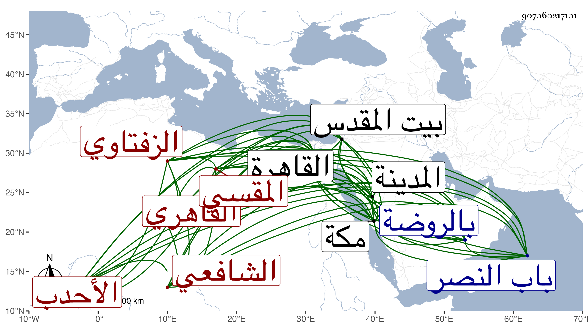

0902Sakhawi.DawLamic.ITO20230111-ara1.EIS1600.907060217101
Biography ID: 907060217101
747
عبد القادر بن الشيخ عمر بن حسين بن علي بن شرف بن سعيد بن خطاب محيي الدين الزفتاوي الأصل القاهري المقسي الشافعي الأحدب أخو علي وأحمد المذكورين وأبوهما ويعرف بأبيه . ولد بالقاهرة ونشأ بها فحفظ القرآن والعمدة وعرضها على شيخنا وغيره واشتغل في الفقه وأصوله والحديث وغيرها وبرع في الميقات والحساب والفرائض وألم بفضائل وربما نظم حسبما كتبته عنه في موضع آخر وطلب الحديث وقتا واجتهد في السماع على بقايا الشيوخ بقراءتي وقراءة غيري وكذا سمع بمكة والمدينة وبيت المقدس والخليل وغيرها ، وأجاز له جماعة ولازم حضور مجالس الاملاء عندي وسمع مني وعلي من تصانيفي وغيرها أشياء بل قرأ بنفسه رواية ودراية وكذا قرأ شرح النخبة على الديمي والبقاعي وتنزل في صوفية المؤيدية وغيرها ثم تضعضع حاله جدا . ومات في شوال سنة ثلاث وثمانين بعد تعلله مدة ودفن بالروضة بالقرب من باب النصر ونعم الرجل كان رحمه الله وإيانا .
